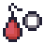
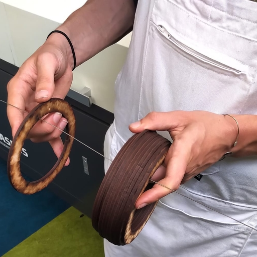

This website is still under construction.
Not all features are functional, and a lot of content is still missing.
It currently runs best on full-screen desktop browsers.

Hi! My name is Daniel.
This website is my personal blog and a showcase of my creative work - mostly as a game designer/programmer, sometimes as a UX designer, and occasionally as a social designer.
If I had to pick a title for a LinkedIn profile, I might go for social systems designer: I enjoy experimenting with new ways in which we can make our engagement with the modern social landscape just a little bit more pleasant.
My most recent project in that spirit is Acting, Thinking, Feeling, a digital card game where two players navigate emotional conflict by proxy of two worms with cool haircuts.
Consider the rest of this page my resume/CV; scroll down to learn more about my education and work experience. If you want to also read about my skills, flaws, interests and more, adjust the filter to the left of this post.
Alternatively, press the button below to check out some of my projects.
last updated on 9 nov 2026
💌 reply to this post
In the summer of 2026, I got my Bachelor of Science with Honours at the University of the Arts Utrecht.
After a year of Computer Science in 2016-2017 and two years of working as a junior software dev, I initially enrolled as a game programmer. However, I soon realised I prefer to treat programming as a means to an end, and wanted to learn more about this end: the how and why of making games.
During my study, I've built many game prototypes - both digital and physical - of which some can be found on my projects page. Notable projects include:
Additionally, from 2024 onward, I started broadening my personal definition of game design, seeking out ways to incorporate the fundamentals of game design into foreign areas - such as real-life resource distribution systems for my internship at The Beach.
All in all, my journey at HKU has made me into a designer with a broad, society-facing perspective - with the technical know-how to not only think of ideas, but also prototype and implement them.
last updated on 9 nov 2026
💌 reply to this post
In the summer of 2023, I dropped my last proper smartphone into a hot tub - my beloved BlackBerry KEY2. Since then, I've only had old smartphones that I use as glorified MP3 players, along with an old Nokia to call/sms with.
I leave chatting (i.e. Signal/WhatsApp) and answering emails for when I'm behind my laptop. Whenever I'm not, I very much appreciate being unreachable for everything except emergencies and spontaneous plans with friends - hence the Nokia.
last updated on 13 nov 2025
💌 reply to this post
In the second half of 2025, I familiarized myself with Lua's entity-component system by making three mods for Noita. Most of the Lua code I wrote can be found in this Github repo.
last updated on 13 nov 2025
💌 reply to this post
GDScript is the scripting language used in Godot. Like Java and C#, it is an object-oriented language, so it wasn't very difficult to wrap my head around GDScript's syntax and its underlying concepts.
You can see some of the code I wrote in GDScript in this Github repo.
last updated on 13 nov 2025
💌 reply to this post
I've been using Godot since early 2024, starting with the Royal Game of Ur group project. Since then, I've used it to create various prototypes as a "solo dev", including one game jam entry and Acting, Thinking, Feeling.
With its open-source nature, optimized dev/design workflow and practically non-existent loading times, Godot is my personal engine of choice - at least for anything that's not a large 3D project.
last updated on 13 nov 2025
💌 reply to this post
Since learning how to use Unity back in 2019, I've used it for the majority of my (group) projects during my study at HKU.
Notable projects I've worked on using Unity:
While no longer my personal engine of choice, I still work comfortably with Unity.
last updated on 13 nov 2025
💌 reply to this post
Blablabla
last updated on 19 nov 2025
💌 reply to this post
Data sovereignty is very important to me, both on a personal and global level. As such, I aim to exclusively use, produce and support software following the FOSS philosophy, only stepping out to proprietary options when absolutely necessary.
I'd like to one day make a meaningfully open source game. If that happens to be something you'd also like to explore: let's get in touch!
last updated on 13 nov 2025
💌 reply to this post